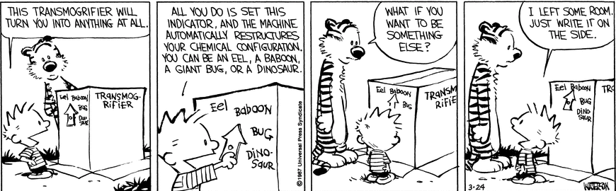

Leonard Cuff Opines
Seek Quality
2021-01-12
I believe one of the things every software engineer needs to do is to expose themselves to high-quality things. To read about good design, and to develop an eye for the quality of the things they do use. This is a key element in order to create quality things ourselves.
A friend who was running a tech-support department once provided a budget and asked each tech to go buy a shirt at Nordstom, the local high-end department store. (Very high end). The goal was to expose them to what high-end help looks like. Not everybody took in the experience, but some did.
One of the best books to read in this arena is Don Norman's "The Design of Everyday Things". It includes a penetrating analysis of things as simple as signaling (via design) how to open doors. Those of us who have pulled when we should have pushed are grateful. Highly informative, the book itself has an extraordinary useful feature: At the bottom of every right-hand page is the number and title of the current chapter. The task of finding something you've previously read becomes dramatically easier.
I was prompted to write this article when using the Chrome browser. I highlighted some text, intending to copy it, and went to the Edit menu. (I usually use a keyboard shortcut, but not always). I flubbed, missing 'Copy' and selecting 'Paste'. Nothing happened, which is what we expect, but wait: 'Paste' should have been dimmed. 'Cut' and 'Delete' should also have been dimmed. There wre NO dimmed menu items. We are surrounded by this kind of mediocre product. Whether this was poor design or poor implementation is an open question, but the Macintosh User Interface guidelines from the early 1990s (not to mention common sense) make it clear that a menu item should be dimmed if it doesn't apply in the current context (in this case, the relevant context being a document that couldn't be edited). Thirty years later, and the Chrome engineers fail to get it correct. Safari gets it right, but Chrome's market share is 77 %, and Safari's is 9 %. We are surrounded by mediocrity.
Oh that this were an isolated case! It's just a particularly prominent one. Every week I find password entry fields that can't be pasted into, and/or that don't allow me to choose whether to display the clear text as I type the password. I use long, complex passwords, and type on different keyboards. I'm frustrated, and frustrating-to-use software is everywhere.
The monitor I use has a rectangular molded plastic frame around the screen. Straight horizontally, but curved and angled as it thickens in the back. Getting my external camera to mount in a satisfactory way becomes a multi-hour project. On the first try, the camera perches on the frame, but extends down over the screen and obscures not only the system menus, but also the application menus. It makes it impossible to read at least one tab name in Chrome, and it sometimes obscures the tab's 'close' button. I fetch a 3" C-clamp from my wood-shop and clamp it higher, but when I sit closer or farther away from the screen and want to adjust the camera angle, the camera slips out of the C-clamp due to the angled surfaces and I need to fiddle for a minute or more to get it back in place at the right angle. I build a wooden gizmo to allow the camera to sit higher, and hold it in place with rubber bands and two spring clamps. The camera twists when I adjust it one-handed. I need two hands. And aesthetics? Yuck. How much effort and expense would it be to design a monitor with a top that better accommodates a camera?
When we surround ourselves with mediocrity (and often we have no choice) we get used to mediocrity and tolerate it in our own work. This is a mistake. We need to be inspired by exposing ourselves to high-quality ideas, products, goals and processes. I was reading an article on 'goal setting' recently, and was dismayed by the impoverished set of goals it used as examples: Making money far past what we need to sustain our lives; Stop working full-time before 50 (to do what?); Cook at home three times a week. (This qualifies as a goal!?). To find high quality goals, explore the ideas of Buckminister Fuller, Alan Kay, Ted Nelson, and others. A goal from Fuller: "To make the world work, for 100% of humanity, in the shortest possible time, through spontaneous cooperation, without ecological offense or the disadvantage of anyone." And notice (per Alan Kay), if it's not about ego and popularity you don't care if you get rich when the goal is achieved, you don't care if you get credit, and you don't care if someone else does it. The goal is worthwhile, beyond all these considerations.
Software allows all sorts of nonsense. When I'm adjusting volume on my MacBook Pro, there are times when I have to check three different controls. One on the programmable menu-bar that is part of keyboard, one at the top of the screen, and one at the bottom of the browser-displayed video. All three have to be "on" and in some intermediate position for me to hear sound. For maximum volume, I have to have all three set to maximum. After a lifetime of engineering, I can figure out that I have to check all those things when all I get is the sound of silence. But my non-tech wife? She has no chance to sort this out.
By allowing such defective design, we disenfranchise most of the world. At a wild guess, the average IQ of software engineers is north of 130. About 3% of the world has an IQ that high. About 84% of the world has an IQ less than 115. Expecting these people to puzzle their way through convoluted software is unrealistic and
unconscionable.
We drink from a fire hose: The amount of information streamed at us is far beyond our ability to take in. If we were to identify the top one-tenth of one percent of this information (by some fuzzy metric of quality) it would still be a fire hose. Consume information with this in mind, and expose yourself to quality.
How many answers are there to a yes or no question?
2019-01-04
This piece was written with a workplace in mind where we had many long technical discussions. Many of
them much longer than they needed to be. Part of the cure for such meetings is described here.
Welcome to the How and Why Wonder Book of Answers,
in which
Alice and Bob talk about how many answers there are to a yes or no question.
Five!
Yup, five. Let's examine them. As recommended by
Brant Sanderson,
we look at concrete cases first, then move on to the abstractions.
Our
story begins with Alice and Bob, who work together at Frenzonics Unlimited,
a mom-and-pop megacorporation that sells Motherhood and
Apple Pie subscription services at deep discount prices.
One day, Bob comes to Alice and asks "Does the transmogrifier work
on electricity?".

How might Alice answer?
"Yes"
Alice, being a skilled communicator, knows what she doesn't know.
Here, she doesn't know why Bob wants to know about how the
transmogrifier is powered. Therefore after saying a single word
'yes', she stops!
Bob, then says "Hmmm, I guess that means we can't take
it to the park for the kids to play with next Saturday."
Alice says "Think gas generator". Bob's eyes get wide, and
he shouts "I'm a genius", taking credit for Alice's idea, as
is his wont to do.
But then Bob trips and falls into the transmogrifier,
emerging as another kind of beast, the dreaded
Administrasaurus Rex, who voices his concern: "That means it
needs a battery backup system before the Edison power outage
scheduled for next Tuesday. Alice nods tiredly.
And a second time Bob trips and falls into the transmogrifier, emerging
as a twenty-tentacled Nitpicker Painintheassicus saying: "That may explain why
our electric bill has been so high the past few months." Alice takes a sip
from her thermos, the contents of which are currently a mystery.
If Alice talks on after saying 'yes', she doesn't learn Bob's
main concern, giving Bob information he doesn't
need or want, distracting him from solving his problem.
Alice's evil twin might have said, "We run a brown extension cord from
the northwest corner of Calvin's bedroom. It's 12 feet, six and three quarter inches from the
outlet and it plugs in to the transmogrifier half way up. We keep it stuck down with duct
tape so that Calvin's mom doesn't trip on it." Alice's evil twin is fun to party with,
but don't ever offer to pick up her laundry.
Nuance 1:
If it seems like Bob's assumptions about what 'yes'
means might be wrong, a short annotation is in order:
"Yes, it runs on 220 Volt
three phase power".
Nuance 2:
If things are even more complex, even though the answer is
ultimately yes, Alice is wise to say "yes, but why do you ask?"
and then supply details that Bob actually cares about.
"No"
No is also an excellent answer, and again Alice, being a superb
communicator, says "No" and stops! As before, she has no
idea why Bob is asking. She needs more information, so
as before she might respond with "Why do you ask?".
Bob might then say, "we're getting brownouts as we
bubble Fallian marsh gas while making
pan-galactic gargle blasters
on Friday afternoons. I guess we'll have to look
elsewhere for the problem." Alice smiles quietly but sagely
while sipping from her thermos.
Notice in this example Bob doesn't chucking
care what kind of power the transmogrifier uses if it's not electricity.
Nuance:
As before, if a simple 'No' could be misleading in some
way, a brief annotation is warranted. "No, it's fueled by
RP-1 and liquid oxygen, and we do use electricity to chill the
liquid oxygen." Alice knows to take a long breath after the
'no'.
"I don't know"
Despite being witty, charming, hard-working and very knowledgeable, Alice doesn't
know everything. She is also better looking than Charlize Theron, but the
fact that her looks even enter into this diatribe is one more example
of how women-as-objects is so pervasive in our culture.
In any event, she has enough self-esteem to say "I don't know"
when she doesn't chucking know. As she says "I
don't know" to Bob, she reminisces about a time when a man named
Thrantar spent almost three hours trying to explain to her how
sendmail.cf files work. In a Eureka moment that long-ago day,
her brain shot
out her left ear, circled her head twice and splattered on
the window to her right, leaving a pattern
that strangely resembled a very grey, shaggy Jerry Garcia. In that instant she
deduced that either Thrantor didn't know how sendmail.cf
files work, or that he was the worst explainer in the world.
She bet on the former, and pulled out her phone to take a picture
of Jerry, which she thought might be useful in a future art
project.
The point, thought Alice to herself, is that even though Thrantor
is incredibly knowledgeable, smart, and verbally fluid, he was dipped
in the river Styx as an infant and came out such a flaming narcissist
that it would cause him to asphyxiate to utter the words "I don't know".
Sipping from her thermos, she thinks about how smart, knowledgeable, and
verbally fluid people that can't say "I don't know" are a colossal waste of her time,
and how she sometimes wished she'd followed Thorin Oakenshield to work at Xerox
Parc, before the Dark Times.
Nuance 1:
One clue that a person can't say "I don't know" is that in
a long conversation about the subject at hand, such a person sometimes reverses
him or herself without acknowledging the reversal.
Nuance 2:
Another possible clue is that you find yourself getting more and more confused as the person talks,
but conversely some people just can't talk clearly to save their lives.
Nuance 3:
If Alice had a good guess, she would answer "I don't know, but my guess is yes, because Calvin
was asking me about how much amperage a single circuit supplies a few weeks before he brought in the
transmogrifier. But to be sure, you should go ask Calvin". She then takes a deep swallow from
her thermos and giggles.
"It depends"
In a different universe, in which the answers are different, Bob asks Alice:
Does the transmogrifier run on electricity?
Alice replies "It depends: When Hobbes uses it, he plugs it in
to the electrical outlet. Calvin runs it using RP-1 and oxygen
as a power source.
Alice would love to fill Bob's head with fascinating facts,
starting with information about Calvin being a space junkie and that
RP‑1, aka highly refined kerosene, was used in the first
stage of the Saturn V rocket, along with liquid oxygen. It produced
a continuous 7.5 freaking million pounds of thrust for the first two minutes of
flight. In the first 1/10th of a second it used about
10 times as much
fuel as Charles Lindbergh used
to cross the Atlantic Ocean in
The Spirit of St. Louis. That's right, thinks Alice, 20 tons
of fuel per second. Bob can spew B.S., but not quite that fast.
But Alice, being grounded in her own self-worth, has no need to
bloviate
to Bob.
Nuance:
Keeping things brief and high-level is critical. See the article
I plan to write
late next year
"Describing the view from 30,000 feet."
SEGFAULT; Segmentation Fault; You made my head explode.
or "The way you asked the question makes me believe that we have very different understandings
of this topic."
Once again, Bob queries Alice: "Does the transmogrifier run on electricity?"
Alice takes another sip of her pan-galactic gargle blaster, thereby resolving a key
plot-point "What does Alice have in her thermos?" With an iron
discipline wrought by years of dealing with jerks like Bob who
get almost nothing done but make more money than her because of the rampant sexism at
Frenzonics Unlimited, she
responds sweetly: "Bob, you do realize that the transmogrifier is just something that came
out of Bill Watterson's imagination, right? He's the creator of the Calvin and Hobbes
comic strip. It's all imaginary."
With deeply furrowed brow, Bob stumbles back towards his cube, mumbling
"But I thought ...", " f-f-f-fourth wall", and "her apple pie sucks, but at least
my mother loves me".
Nuance:
This is probably the most difficult territory to navigate. Alice and Bob
are going to have to (uh-oh) understand each other. Be willing to take in new
information. It requires more skills
than we have time to cover here, but a key element is to hark to these words.
"Some people wait to talk ...... and some people listen." It is only by listening
that Alice will understand Bob's world view, and vice-versa. See also my
future article on "Understanding how to understand." Soon to become a major motion picture.
Help for the question asker:
If the person you asked babbles at length, and you become lost in the welter of
details concerning RP-1, fourth walls and the need to augment apple pie with
ice-cream or cheddar cheese, you can ask things like: "Was that a 'yes' or a 'no' you just
gave me?"
"Is there a yes or no answer to this question?" "Can you loan me a fiver?"
Of course the best thing is to
point them to this article, but the moron probably doesn't have the attention
span of an uncircumcised flea. Never mind.
Summary, abstractions, Aristotle, Lao Tzu and the nature of reality.
TL;DR:
The five possible answers are
- yes (then stop)
- no (then stop)
- It depends
- I don't know
- Segfault / You think WHAT?
Use them. Stay brief.
Yes-or-no questions are grounded in an Aristotelian world view,
whatever that means. Oh wait, I'm the author, I know what that
means. It means that reality has a
definite nature.
It
ain't just some pile of mush that you can pretend works any way you want.
Case in point: Aristotle knew the earth was a sphere, and 2,490.1
years ago his pal Eratosthenes accurately calculated its circumference
to be
24,901 miles.
Thus you can safely ignore the nut-cases who claim
the earth is flat. Believe them, though, when they say we didn't
land on the moon. Such an obvious forgery. <Sad>. I learned from my mom that the moon
is made of green cheese. The retro-rockets on the lunar lander would
have melted the cheese below them. As they descended into the hole,
they would continue to melt cheese until they were all the way
through the moon. They could never have landed. Ergo, we never landed on
the moon! Flew around it - sure, but landed? Only in Calvin's dreams.
But returning to our main theme, when someone talks on and on in response to a yes or no question,
the person asking the question often will have no clue as to which
of the five categories apply. Misery.
Ignoring what goes on when things are really really tiny (a nod to
the quantum mechanics waving their monkeywrenches at the back of the
meeting hall), things are often one way or the other (and are thus
amenable to a yes-or-no answer). And to communicate
clearly, it's good to
cut to the chase
and deliver the true or false information that an Aristotelian
world view promises.
And this may seem totally obvious, like motherhood and apple pie
itself, but if you talk at length without saying yes or no, then I can
only assume that the answer isn't yes or no, that it's either an
"it depends" answer or a segfault answer. And it will
be hard to figure that out while you babble on. The worst-case
scenario of course is that you don't actually know, and I'm
going to have to figure THAT out and then go ask someone else
or rely on my own towering intellect. <cough>
So, in summary, Aristotle is your man if we're talking about the physical
world. And in case you're wondering the physical world includes
software.
Lao Tzu
On the off chance that someone might ask you a yes or no question
about psychological or psycho-spiritual matters, it turns out we're
better to leave Aristotle behind, and turn to Lao Tzu, author of
the Tao Te Ching, or 'Watercourse Way'.
In Taoist, that is to say non-Aristotelian, systems of logic, we might answer 'yes', 'no',
'both', 'neither' or 'hey, look over there!'
What looks like a yes or no question in the psychological realm is
often much more nuanced. The question "Does this dress make me look
fat?" comes to mind. When Lao Tzu's wife, Chou Sum Fat, asked him
this question, he adroitly responded "Do you remember the paintings
we saw by Peter Paul Rubens?" Chou Sum rocked back on her heels,
asking "You mean that Dutch dude that we saw when we were time
traveling to the future?" Lao Tzu nodded, as she reminisced: "They
made me laugh and cry at the same time". Lao Tzu, continuing to
nod, a non-verbal soothing strategy, then said "Isn't it strange
that we can feel two such different emotions at the same time?",
thereby completely distracting Chou Sum from the original topic and
saving his ass so he could write
a remarkable book.
If you'd care to contact me, feel free to email me.
To do so, assemble the parts. The right hand side includes 'gmail'
and is followed of course by 'dot com'.
LeonardCuff [at] Right Hand Side